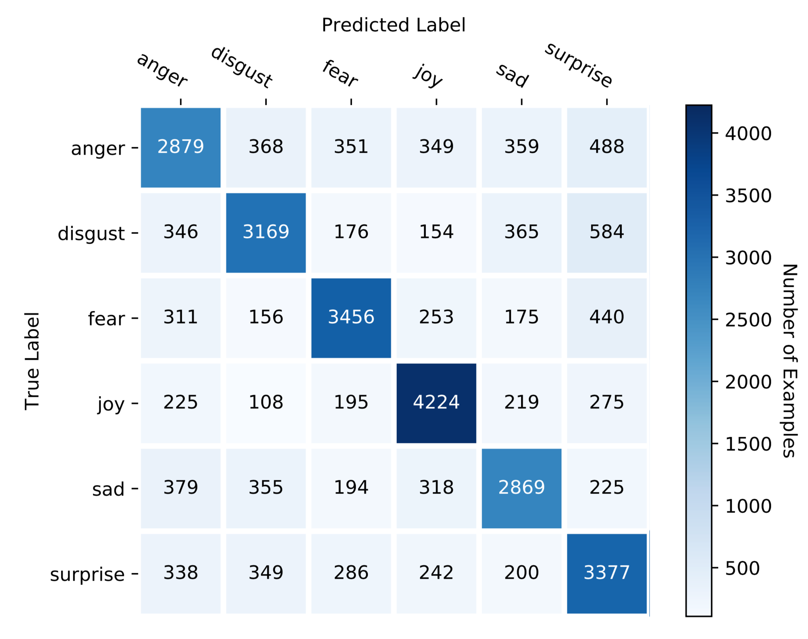
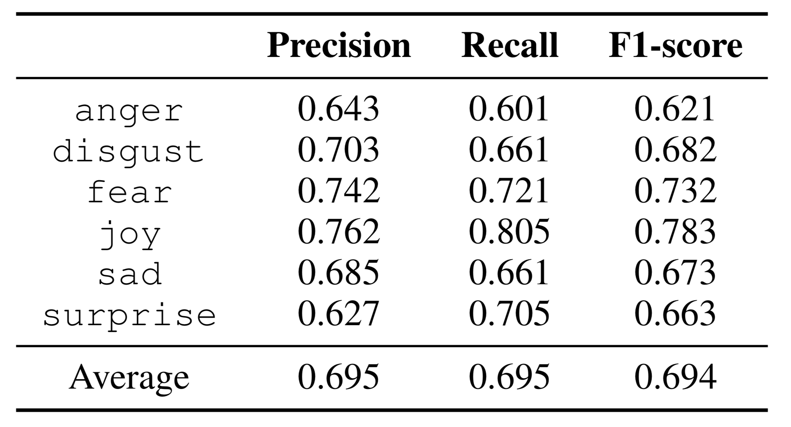

IIIDYT at IEST 2018: Implicit Emotion Classification with Deep Contextualized Word Representations
Jorge A. Balazs, Edison Marrese-Taylor, Yutaka Matsuo
October 31, 2018
Implementation Details and Hyperparameters
Ablation Study
 Dropout
Dropout
Error Analysis
Confusion Matrix
Error Analysis
Classification Report
Error Analysis
 PCA projection
PCA projection
Effect of the Amount of Training Data

Conclusions and Future Work